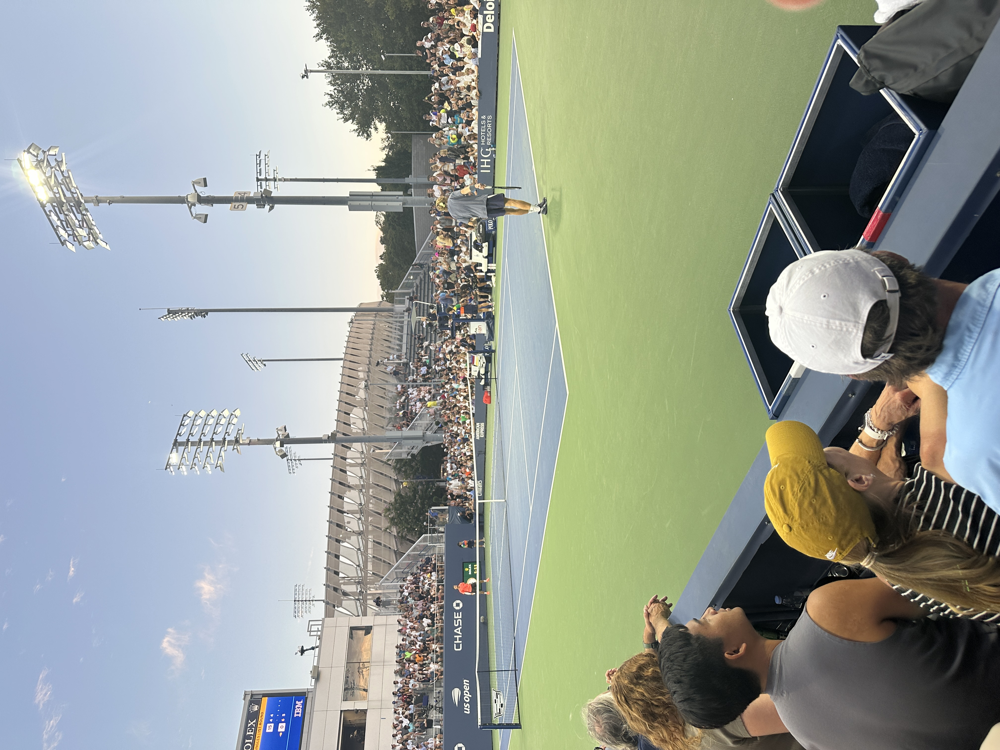

Melvin's Tennis History
Some Pictures and Memories I have with tennis
Live ATP Top 10 (Singles) — As of Oct 29, 2025
- 1 — C. Alcaraz — 11,340 pts
- 2 — J. Sinner — 10,500 pts
- 3 — A. Zverev — 6,160 pts
- 4 — T. Fritz — 4,685 pts
- 5 — N. Djokovic — 4,580 pts
- 6 — A. de Minaur — 3,935 pts
- 7 — B. Shelton — 3,820 pts
- 8 — L. Musetti — 3,685 pts
- 9 — C. Ruud — 3,235 pts
- 10 — F. Auger-Aliassime — 3,195 pts
Project 1 — Example App
This was my most recent visit to the US Open. I have gotten to meet a lot of great players, many of whom I have looked up to as I’ve grown up. The streets of the US Open grounds in Flushing Meadows are beautiful and etched with history that dates back hundreds of years. This was a picture of one of my favorite tennis players, Andrey Rublev, who had won this match against Dino Prižmić, in which he won 6-4 6-4 6-4. Every year I go back to the Meadows I feel a certain eagerness to see the art form of these professional players take place on the largest stadiums in the world.
Project 2 — Data Analysis
This is a photo of me playing tennis back in high school in my county's divisional tournament. Tennis was a big part of my journey in high school, as I was the tennis team captain. Through my time playing in high school, I have made connections with people that I will hold on to for the rest of my life. The memories that I have made with this team and my time playing, I will cherish for many years to come. Through my time as captain, I learned how to be a leader who was both respected and joyful. I take these lessons with me and continue to strive to be a better leader.
Project 3 — Experiment
This is a photo of my first time going to the US Open. What I didn’t know then was how much I would come to cherish this experience. I had attended with my friend, in which we saw Carlos Alcaraz play in the first round against Dominik Koepfer, in which Alcaraz won 6-2 3-2 walkover.